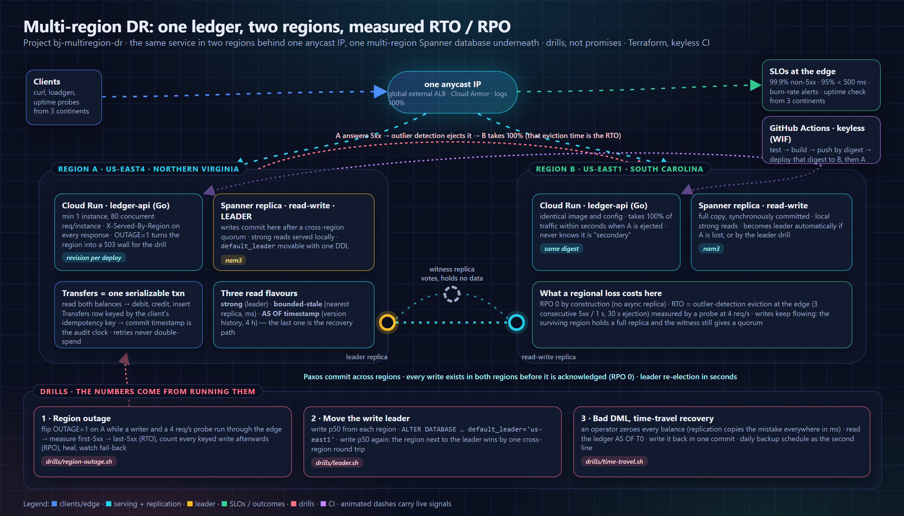

Google Cloud portfolio · project 6 of the series
The same Go money-transfer service runs in Northern Virginia and South Carolina on Cloud Run, behind one anycast IP on the global load balancer, on top of one multi-region Cloud Spanner database. A regional outage changes where requests are served, never what the ledger says. The recovery point is zero by construction; the recovery time is the load balancer's outlier detection evicting the dead region, and three drills measure it instead of estimating it. Terraform for everything; keyless CI that rolls one region at a time.
Narrated, against the live platform: one IP answering from two regions → twenty concurrent writers and an unchanged invariant → strong, stale and idempotent → the Spanner instance → a region switched off while a probe and a writer run → the write leader moved with one statement → a bad UPDATE undone from version history → the dashboard and SLOs → the keyless rollout.
Transcript: demo/transcript.md · Captions: demo/captions.srt. The drills in the video ran against the real platform during the recording; the numbers on this page come from them.
Live diagram (the dashed lines animate): clients and the anycast front door on top, the two region islands joined by the Spanner replication ring, the drills underneath.

Spanner nam3 keeps a read-write replica in each serving region and a witness in a third. Every commit is a cross-region Paxos quorum, so there is no replication lag to lose: RPO = 0 is a property of the topology, not a backup schedule. The price is one cross-region round trip per write, which the leader drill makes visible.
Serverless NEGs have no health checks. The global external ALB learns a region is down from Cloud Run service health: each instance answers a readiness probe (/readyz, every 5 s, 2 failures), and a region with fewer than 60% ready instances stops receiving traffic. Outlier detection on 5xx (3 in a row within 1 s, 30 s ejection) is the second line; it is per proxy and only statistical at low request rates.
A transfer is one serializable read-write transaction: read both balances, debit, credit, insert a Transfers row whose primary key is the client's idempotency key. A retry after a failover cut the first response off finds the row and returns duplicate: true. Money never moves twice.
Strong reads go through the leader. Bounded-stale reads (?staleness=15s) are served by the nearest replica and are what dashboards should use. AS OF reads at an exact past timestamp come from the version history, and the restore endpoint turns one into a recovery.
A RegionFlags row in the ledger, polled by every instance every 2 s. When it is on, /readyz and every business request in that region answer 503 while the liveness probe stays green: the instances stay up and report themselves not ready, which is what a real partial outage looks like to the platform. It has to be a flag: Cloud Run never routes to a new revision whose readiness probe fails from the start.
Availability and latency SLOs use the load balancer's own metrics, split by the serving region, so a failover is judged the way a user would judge it. Terraform ignores the image and environment of the services on purpose: CI and the drills own revisions, Terraform owns everything around them.
Each one is a shell script in drills/; each prints the evidence it was designed to produce.
POST /admin/outage through the other region); the edge fails until the region's service health drops and us-east1 takes 100%; 40 s later the flag is cleared and traffic flows back. Output: a one-line-per-second edge timeline, RTO = first 5xx → last 5xx, RPO = every acknowledged write present exactly once with the total balance unchanged.ALTER DATABASE ledger SET OPTIONS (default_leader = 'us-east1'), then the same measurement. The region next to the leader wins by about one cross-region round trip; Spanner re-elects on its own in a real loss, this is the dial for when you want to choose.UPDATE Accounts SET Balance = 0 WHERE TRUE straight at the database; replication copies the mistake to every region in milliseconds. A summary ?asof=T0 still shows the right ledger; POST /ledger/restore?asof=T0 reads every account at T0 and writes it back in one commit. A daily backup schedule is the second line.| Measurement | Value | Notes |
|---|---|---|
| Region outage: edge timeline | recorded run: flag on 20:34:47 → first 5xx 20:34:45* → last 5xx 20:34:53: RTO 8 s, 8 failed probes of 360; us-east1 served 100% until the flag was cleared at 20:35:28. Earlier run: 16 s, 11 failed probes, fail-back 17 s after the flag was cleared. (*the probe line is stamped at the start of its second) | Probe at 4 req/s from India through the anycast IP; readiness probe every 5 s, 2 failures; service health threshold 60%; outlier detection as backup. |
| Region outage: writes during the drill | recorded run: 31 keyed writes, 3 needed a retry, 31 committed exactly once (transfers 450 → 481); total_balance 20 000 → 20 000. Earlier run with a single retry: 7 of 41 rejected inside the window, still 0 duplicates and 0 acknowledged writes lost | The writer retries the same idempotency key up to 4 times 2 s apart, so a retry outlives the failover window; the ledger never saw a duplicate. |
| Concurrency (loadgen, 20 workers × 20 s) | 457 requests, 21.4 rps, all 201; p50 1236 ms, p95 1346 ms (client in India → us-east4 → cross-region commit) | total_balance 20 000 → 20 000; transfers +457 = the 201 count. |
| Write p50 with leader in us-east4 | us-east4 547 ms · us-east1 662 ms | Measured from each region's Cloud Run URL from India, so ~450 ms of that is client RTT; the gap is the cross-region commit. |
Write p50 after default_leader = 'us-east1' | us-east4 553 ms · us-east1 504 ms | The advantage swaps regions with one DDL statement; the switch itself took seconds. |
| Time travel | 20 000 → 0 → (AS OF T0) 20 000 → restored 20 accounts → 20 000 | Version retention 4 h; the restore is one multi-row commit from the AS OF read. |
Non-5xx share of loadbalancing.googleapis.com/https/request_count on the URL map, 28-day rolling, with 1 h > 14.4× and 6 h > 6× burn-rate alerts.
Distribution cut on https/backend_latencies: the time between the edge and the serving region, which excludes the client's own RTT.
Requests/s and 5xx/s by backend_scope, p95 by region, Cloud Run instances by region, Spanner CPU and API latency by method. A failover is a visible hand-off between two lines.
/healthz on the anycast IP every minute from several Google regions, so "is the edge up" is answered from outside the project.
GitHub Actions authenticates through Workload Identity Federation (no key files anywhere): test → build → push by digest → gcloud run services update --image <digest> to us-east1, then to us-east4, max-parallel: 1. A bad build can never take both regions down in the same minute, and the previous revision stays one command away.
strategy:
max-parallel: 1 # one region at a time: the other keeps serving if this one goes wrong
matrix:
region: [us-east1, us-east4]~12 minutes to a serving edge, ~US$0.6/hour while up (almost all Spanner), one script to remove it. Full detail and the gotchas in REBUILD.md.
git clone https://github.com/bhavishyajain545/gcp-multiregion-dr-sre && cd gcp-multiregion-dr-sre
$EDITOR terraform/terraform.tfvars # project_id, github_repo, alert_email
./deploy.sh # registry → image v1 → Spanner, Cloud Run ×2, LB, SLOs → seed → smoke
python3 loadgen/load.py "$(terraform -chdir=terraform output -raw api)"
drills/region-outage.sh ; drills/leader.sh us-east1 ; drills/time-travel.sh
./teardown.sh # destroy → leftovers → auditNew Spanner instances need Enterprise Plus for any multi-region configuration (Feature MULTI_REGION is not available ... in Edition ENTERPRISE). The error arrives after the rest of the apply, so the edition is the first thing to check in the plan.
The first real drill: 52 s of 503s at the edge and exactly one request moved to the other region. Outlier detection runs independently in every proxy and needs sustained traffic to matter. The failover signal that works for serverless is service health from readiness probes; once /readyz existed and the outage failed it, the hand-off happened.
The very first outage revision answered 503 to everything, including the startup probe, so Cloud Run refused to deploy it and nothing was measured. Liveness stays green, readiness fails, users fail: that is what a partial outage looks like to the platform.
A body-less POST through the global ALB gets 411 Length Required; the same request straight to Cloud Run works. Every drill sends -d "".
google_spanner_database.id is instance/database; the client wants projects/…/instances/…/databases/…. The startup probe failing on both regions at once was the first symptom.
A billing account links five projects by default; the sixth link fails quietly and the next services enable says UREQ_PROJECT_BILLING_NOT_FOUND. Unlink a finished project first.
From India every write carries ~450 ms of client RTT, which dwarfs the cross-region commit. The leader drill therefore compares the two regions against each other, and the latency SLO uses backend latency, which the client RTT cannot touch.